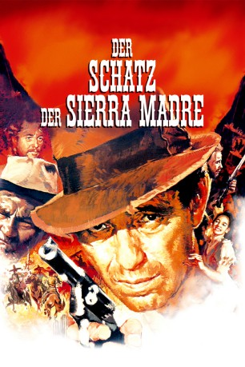
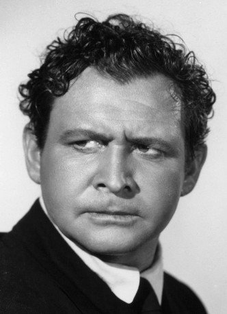
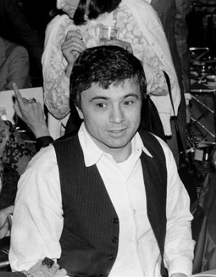
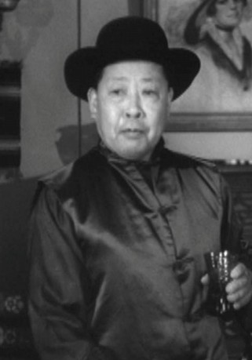
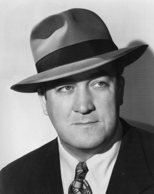

#7042 Der Schatz der Sierra Madre
Alternativ: The Treasure of the Sierra Madre
Auszeichnungen: 3 Oscars gewonnen für 1 Oscars nominiert 3 GoldenGlobes gewonnen
 
 IMDB-Wertung: 8.3 / 10
IMDB-Wertung: 8.3 / 10  IMDB-TOP-Platzierung: 124
IMDB-TOP-Platzierung: 124  Metascore: 0
Metascore: 0 
Drei Abenteurer treffen sich in dem mexikanischen Nest Tampico, um gemeinsam auf Goldsuche zu gehen. In der gottverlassenen Einöde der Sierra Madre finden die drei tatsächlich den gelben Schatz - aber er wird ihnen kein Glück bringen. Das Gold verändert sie. Vor allem Dobbs sät Misstrauen unter den Männern und verdächtigt die anderen zwei, ihn hereinlegen zu wollen. Auf dem Rückweg entzweien sie sich, Dobbs, der durch einen Lotteriegewinn die Ausrüstung ermöglicht hatte, zieht mit dem Gold davon. Die Partner finden ihn in der Wüste, ermordet von Banditen.
Jahr: 1948
Dauer: 126 Minuten
FSK: 12
Land: USA Studio: Warner Bros.Tonspuren:
Untertitel: Deutsch,
Auflösung: 1080p (1488x1080) Größe: 8140 MB
Genre: Drama, Abenteuer, Western
Regisseur:  John Huston
John Huston
Drehbuch: John Huston
Soundtrack:
Darsteller:
 Humphrey Bogart als Dobbs
Humphrey Bogart als Dobbs- Walter Huston als Howard
- Tim Holt als Curtin
- Bruce Bennett als Cody
-  Barton MacLane als McCormick
- Alfonso Bedoya als Gold Hat
-  Robert Blake als Mexican Boy Selling Lottery Tickets , uncredited
-  Spencer Chan als Proprietor , uncredited
- Jacqueline Dalya als Flashy Girl , uncredited
-  Ralph Dunn als Flophouse Bum , uncredited
 Pat Flaherty als Customer in Bar Who Warns Curtin and Dobbs about Pat McCormick , uncredited
Pat Flaherty als Customer in Bar Who Warns Curtin and Dobbs about Pat McCormick , uncredited- Martin Garralaga als Railroad Conductor , uncredited
- Jack Holt als Flophouse Bum , uncredited
 John Huston als American in Tampico in White Suit , uncredited
John Huston als American in Tampico in White Suit , uncredited- Julian Rivero als Barber , uncredited
 Jay Silverheels als Indian Guide at Pier , uncredited
Jay Silverheels als Indian Guide at Pier , uncredited- Arturo Soto Rangel als Presidente
- Manuel Dondé als El Jefe
- José Torvay als Pablo
- Margarito Luna als Pancho
- Guillermo Calles als Mexican Storeowner , uncredited
- Roberto Cañedo als Mexican Lieutenant , uncredited
- Ernesto Escoto als Mexican Bandit , uncredited
- Francisco Islas als Indian , uncredited
- Mario Mancilla als Child , uncredited
- Valdespino als Indian , uncredited
- Ildefonso Vega als Indian , uncredited
- Harry J. Vejar als Bartender , uncredited
- Ignacio Villabajo als Mexican Bandit , uncredited
Datei: X:\HD-Western-1900-1959\Schatz der Sierra Madre, Der (1948, FSK12, 1488x1080).mkv seit 18.09.2017
Festplatte: HD Eastern+Western
 Es gibt insgesamt 98 Filme in der Gruppe 'HD-Western-1900-1959'
Es gibt insgesamt 98 Filme in der Gruppe 'HD-Western-1900-1959'